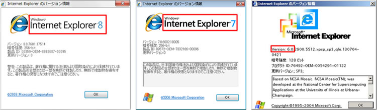
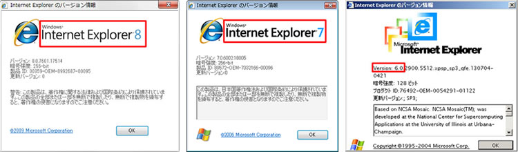

TOP > INFORMATION
HPリニューアルに伴い、レイアウトが崩れて表示されている方へ
1、まずはバージョンを確認
[ヘルプ] メニューをクリックします。
([ヘルプ] メニューが表示されていない場合は、キーボードの Alt キーと H キーを同時に押します。)
[バージョン情報] をクリックします。
[Internet Explorer のバージョン情報] 画面が表示されるので、バージョンを確認します。
●Internet Explorer8（下記の画像/左）が表示されている方は手順2へ
●Internet Explorer7（下記の画像/中央）及び、
●Internet Explorer6（下記の画像/右）が表示されている方は手順3へ

2、ヘッダーにある[ツール]メニューをクリック。
「互換表示」にチェックが入っていないか確認
チェックが入っている場合はチェックを外します。再読み込みをして完了。
チェックが入っていないのにレイアウトが崩れている場合は、手順3へ
3、Internet Explorerのバージョンアップをお勧め致します。
こちらより最新のInternet Explorerをダウンロードして下さい。（※無料です）
[ヘルプ] メニューをクリックします。
([ヘルプ] メニューが表示されていない場合は、キーボードの Alt キーと H キーを同時に押します。)
[バージョン情報] をクリックします。
[Internet Explorer のバージョン情報] 画面が表示されるので、バージョンを確認します。
●Internet Explorer8（下記の画像/左）が表示されている方は手順2へ
●Internet Explorer7（下記の画像/中央）及び、
●Internet Explorer6（下記の画像/右）が表示されている方は手順3へ

2、ヘッダーにある[ツール]メニューをクリック。
「互換表示」にチェックが入っていないか確認
チェックが入っている場合はチェックを外します。再読み込みをして完了。
チェックが入っていないのにレイアウトが崩れている場合は、手順3へ
3、Internet Explorerのバージョンアップをお勧め致します。
こちらより最新のInternet Explorerをダウンロードして下さい。（※無料です）